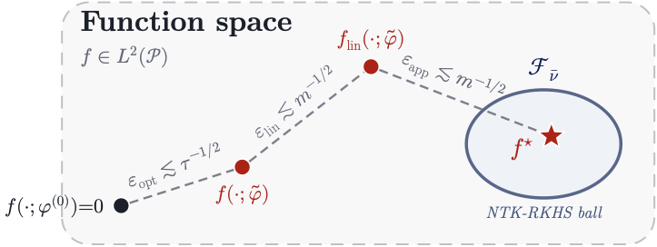

News
- Jun 2026 Presenting a poster at AIMACCS 2026 (June 1–2) — come say hi!
- Jan 2026 New paper accepted to AISTATS 2026! 🎉
About
I'm a PhD student advised by Prof. Atilla Eryilmaz. I completed my master's degree under the supervision of Prof. Aylin Yener. My research currently lies in theoretical machine learning and optimization.
Publications
-
Architectural Optimization

- Finite-Time Analysis of Gradient Descent for Shallow Transformers
- Rate Distortion Perception
- Fundamental Limits for Text Summarization: A Rate-Distortion-Perception Approach
- Rate-Distortion-Perception Trade-off in Summarization
- A Rate-Distortion Framework for Summarization
- Semantic Communication
- Semantic Relaying for Next Generation Networks: Harnessing Advances on Large Language Models
- Semantic Relaying of Sentences
- Semantic Forwarding for Next Generation Relay Networks